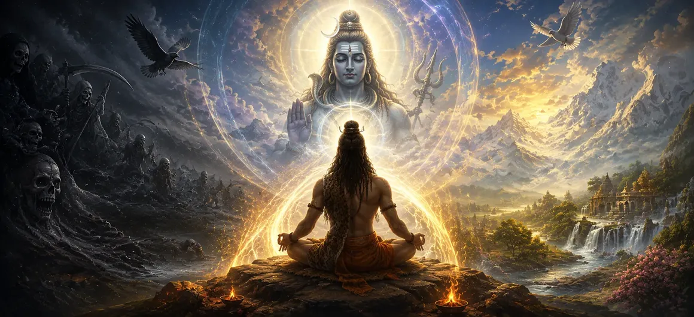

मृत्यु से बचना और शिव को प्राप्त करना
उमा संहिता के अध्याय 26, अध्याय 27 में जांचे गए काल पर विजय पाने के व्यावहारिक अनुशासन से आगे बढ़ते हुए आध्यात्मिक अनुभूति के सर्वोच्च शिखर तक पहुंच जाता है। मृत्यु से बचना और शिव को प्राप्त करना. यह पता लगाने के बाद कि भक्ति और मानसिक शुद्धि समय की पकड़ को कैसे ढीला करती है, शास्त्र अब आत्मा की अंतिम नियति को प्रकट करता है - संसार के चक्र से पूर्ण मुक्ति और भगवान शिव की सर्वोच्च चेतना के साथ पूर्ण मिलन (सायुज्य मुक्ति)।
यह अध्याय स्वतंत्रता की उत्कृष्ट स्थिति का विवरण देता है जहां नश्वर सीमाएं पूरी तरह से विलीन हो जाती हैं, जिससे मुक्त आत्मा शाश्वत दिव्य आनंद और सर्वोच्च शांति में डूब जाती है।
इस पाठ में मुख्य विषय (11 स्तंभ)
- 01 मोक्ष और पूर्ण मुक्ति का अंतिम लक्ष्य →
- 02 अहंकार और सीमित व्यक्तित्व का विघटन →
- 03 शिव सायुज्य (संघ) की उत्कृष्ट प्रकृति →
- 04 पुनर्जन्म के चक्र का स्थायी समापन →
- 05 शुद्ध आंतरिक चेतना का प्रकाश →
- 06 असीम आनंद और शाश्वत आनंद का अनुभव (आनंद) →
- 07 सर्वोच्च उत्प्रेरक के रूप में दिव्य अनुग्रह (शिव अनुग्रह)। →
- 08 स्थान और समय के द्वंद्वों को पार करना →
- 09 ब्रह्मांडीय महासागर में विलीन होने वाली नदियों का रूपक →
- 10 जीवित मुक्त ऋषि की उत्कृष्ट स्थिति (जीवन्मुक्त) →
- 11 शिव प्राप्ति से छायापुरुष के रहस्य तक परिवर्तन →
1. मोक्ष और पूर्ण मुक्ति का अंतिम लक्ष्य
यह प्रारंभिक खंड मोक्ष को मानव अस्तित्व के सर्वोच्च उद्देश्य के रूप में स्थापित करता है, जो नश्वर जीवन में निहित सभी प्रकार के बंधन, अज्ञान और पीड़ा से मुक्ति का प्रतिनिधित्व करता है।
उमा संहिता साधकों को याद दिलाती है कि प्रत्येक आध्यात्मिक अनुशासन की परिणति इस भव्य मुक्ति में होती है।
2. अहंकार और सीमित व्यक्तित्व का विघटन
पाठ बताता है कि सच्ची स्वतंत्रता के लिए अलग-अलग अहंकार (अहंकार) के पूर्ण लुप्त होने की आवश्यकता होती है, जो चेतना को एक अलग, कमजोर भौतिक शरीर की संकीर्ण भावना से बांधता है।
जब अहंकार विलीन हो जाता है, तो आत्मा का सच्चा अनंत स्वरूप बिना किसी बाधा के चमक उठता है।
3. शिव सायुज्य (संघ) की उत्कृष्ट प्रकृति
उमा संहिता में सायुज्य को मुक्ति का सर्वोच्च रूप बताया गया है, जहां व्यक्तिगत आत्मा पूरी तरह से भगवान शिव के साथ विलीन हो जाती है, उनके सर्वज्ञता, आनंद और अनंत काल के दिव्य गुणों को साझा करती है।
यह मिलन प्रेक्षक और अवलोकन के सभी द्वंद्वों को पार कर जाता है।
4. पुनर्जन्म के चक्र का स्थायी अंत
शिव को प्राप्त करने से संसार का घूमता हुआ चक्र हमेशा के लिए टूट जाता है, जिससे यह सुनिश्चित हो जाता है कि मुक्त आत्मा को फिर कभी दुख और मृत्यु के भौतिक क्षेत्र में जन्म नहीं लेना पड़ेगा।
आत्मा को स्थानांतरण के दर्दनाक चक्र से हमेशा के लिए मुक्त कर दिया जाता है।
5. शुद्ध आंतरिक चेतना का प्रकाश
धर्मग्रंथ इस बात पर प्रकाश डालता है कि कैसे मुक्ति आंतरिक अस्तित्व को उज्ज्वल स्व-प्रकाशमान जागरूकता से भर देती है, आध्यात्मिक अंधकार और अज्ञान के हर अवशेष को दूर कर देती है।
शुद्ध चेतना स्वयं को सर्वोच्च दिव्य प्रकाश के समान मानती है।
6. असीम आनंद और शाश्वत आनंद का अनुभव (आनंद)
उमा संहिता शिव के साथ मिलन की स्थिति को शून्य के रूप में नहीं, बल्कि अनंत, अखंड आनंद (आनंद) के एक उमड़ते सागर के रूप में चित्रित करती है जो किसी भी सांसारिक खुशी से कहीं अधिक है।
यह दिव्य आनन्द बाह्य परिस्थितियों से पूर्णतया स्वतंत्र है।
7. सर्वोच्च उत्प्रेरक के रूप में दिव्य अनुग्रह (शिव अनुग्रह)।
पाठ इस बात पर जोर देता है कि अकेले मानव प्रयास पूर्ण मुक्ति के लिए अपर्याप्त है; यह अंततः भगवान शिव की असीम कृपा (अनुग्रह) है जो भ्रम के अंतिम पर्दे को तोड़ देती है।
कृपा एक पवित्र भोर की तरह समर्पित आत्मा पर उतरती है।
8. स्थान और समय के द्वंद्वों को पार करना
उमा संहिता बताती है कि मुक्त अवस्था में, यहां और वहां, अतीत और भविष्य की धारणाएं पूरी तरह से गायब हो जाती हैं, केवल शिव में वर्तमान क्षण की शाश्वत, अपरिवर्तनीय वास्तविकता रह जाती है।
समय आत्मसाक्षात्कारी आत्मा पर अपना प्रभुत्व पूरी तरह खो देता है।
9. ब्रह्मांडीय महासागर में विलीन होने वाली नदियों का रूपक
धर्मग्रंथ समुद्र में प्रवेश करने पर नदियों के अपने अलग-अलग नाम और रूप खोने के क्लासिक रूपक का उपयोग करता है, जिसमें दर्शाया गया है कि कैसे व्यक्तिगत आत्मा शिव के ब्रह्मांडीय महासागर में सहजता से विलीन हो जाती है।
इस संदर्भ में व्यक्तिगत पहचान की हानि सार्वभौमिक पूर्णता की अंतिम उपलब्धि है।
10. जीवित मुक्त ऋषि की उत्कृष्ट स्थिति (जीवनमुक्त)
उमा संहिता में लिखा है कि जो लोग भौतिक शरीर में रहते हुए भी इस अनुभूति को प्राप्त कर लेते हैं, वे जीवनमुक्त के रूप में रहते हैं - जो सांसारिक कष्टों से अप्रभावित शांति, करुणा और दिव्य ज्ञान का संचार करते हैं।
ऐसे संत शिव की कृपा के जीवंत अवतार के रूप में पृथ्वी पर विचरण करते हैं।
11. शिव प्राप्ति से छायापुरुष के रहस्य तक परिवर्तन
मृत्यु से बचने और भगवान शिव के साथ पूर्ण मिलन प्राप्त करने की उदात्त ऊंचाइयों का पता लगाने के बाद, उमा संहिता अगले अध्याय में छायापुरुष (छाया स्व) के जटिल आध्यात्मिक रहस्य की जांच करने के लिए तैयार होती है।
यह परिवर्तन स्थूल जगत् मुक्ति से मानव स्वरूप के भीतर सूक्ष्म शारीरिक और आध्यात्मिक निदान की ओर बढ़ता है।
आध्यात्मिक अंतर्दृष्टि
अध्याय 27 हमें ग्यारह मूलभूत स्तंभों के माध्यम से सिखाता है कि मृत्यु पर अंतिम विजय भगवान शिव के साथ पूर्ण मिलन (सायुज्य) के माध्यम से प्राप्त की जाती है। अहंकार को विघटित करके और दैवीय कृपा को खोलकर, आत्मा संसार को पार कर जाती है और शाश्वत आनंद में विश्राम करती है।
अक्सर पूछे जाने वाले प्रश्न
① उमा संहिता में अध्याय 27 का अंतिम फोकस क्या है?
अध्याय पूरी तरह से मृत्यु और पुनर्जन्म के चक्र से बचने, भगवान शिव के साथ पूर्ण मिलन या सायुज्य मुक्ति पर केंद्रित है।
मुक्ति भगवान शिव की पूर्ण कृपा, गहन ध्यान बोध और अहंकार और कर्म संबंधी आसक्तियों के पूर्ण विघटन से प्राप्त होती है।
③ उमा संहिता की प्रगति में इस अध्याय के बाद क्या आता है?
शिव को प्राप्त करने की सर्वोच्च अवस्था की खोज के बाद, पाठ अगले अध्याय में छायापुरुष की आकर्षक आध्यात्मिक खोज में बदल जाता है।